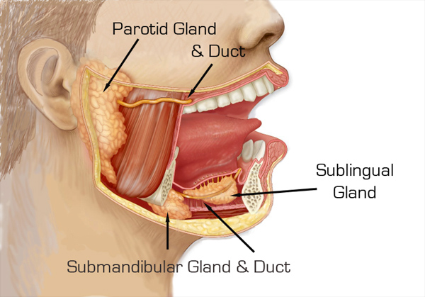

The gastrointestinal tract is a muscular tube lined by a special layer of cells, called epithelium. The contents of the tube are considered external to the body and are in continuity with the outside world at the mouth and the anus. Although each section of the tract has specialised functions, the entire tract has a similar basic structure with regional variations.
The wall is divided into four layers as follows:
Mucosa
The innermost layer of the digestive tract has specialised epithelial cells supported by an underlying connective tissue layer called the lamina propria. The lamina propria contains blood vessels, nerves, lymphoid tissue and glands that support the mucosa. Depending on its function, the epithelium may be simple (a single layer) or stratified (multiple layers). Areas such as the mouth and oesophagus are covered by a stratified squamous (flat) epithelium so they can survive the wear and tear of passing food. Simple columnar (tall) or glandular epithelium lines the stomach and intestines to aid secretion and absorption. The inner lining is constantly shed and replaced, making it one of the most rapidly dividing areas of the body! Beneath the lamina propria is the muscularis mucosa. This comprises layers of smooth muscle which can contract to change the shape of the lumen.
Submucosa
The submucosa surrounds the muscularis mucosa and consists of fat, fibrous connective tissue and larger vessels and nerves. At its outer margin there is a specialized nerve plexus called the submucosal plexus or Meissner plexus. This supplies the mucosa and submucosa.
Muscularis externa
This smooth muscle layer has inner circular and outer longitudinal layers of muscle fibres separated by the myenteric plexus or Auerbach plexus. Neural innervations control the contraction of these muscles and hence the mechanical breakdown and peristalsis of the food within the lumen.
Serosa/mesentery
The outer layer of the GIT is formed by fat and another layer of epithelial cells called mesothelium.
Individual components of the gastrointestinal system
Oral Cavity
The oral cavity or mouth is responsible for the intake of food. It is lined by a stratified squamous oral mucosa with keratin covering those areas subject to significant abrasion, such as the tongue, hard palate and roof of the mouth. Mastication refers to the mechanical breakdown of food by chewing and chopping actions of the teeth. The tongue, a strong muscular organ, manipulates the food bolus to come in contact with the teeth. It is also the sensing organ of the mouth for touch, temperature and taste using its specialised sensors known as papillae. Insalivation refers to the mixing of the oral cavity contents with salivary gland secretions. The mucin (a glycoprotein) in saliva acts as a lubricant. The oral cavity also plays a limited role in the digestion of carbohydrates. The enzyme serum amylase, a component of saliva, starts the process of digestion of complex carbohydrates. The final function of the oral cavity is absorption of small molecules such as glucose and water, across the mucosa. From the mouth, food passes through the pharynx and oesophagus via the action of swallowing
Salivery Glands
Three pairs of salivary glands communicate with the oral cavity. Each is a complex gland with numerous acini lined by secretory epithelium. The acini secrete their contents into specialised ducts. Each gland is divided into smaller segments called lobes. Salivation occurs in response to the taste, smell or even appearance of food. This occurs due to nerve signals that tell the salivary glands to secrete saliva to prepare and moisten the mouth. Each pair of salivary glands secretes saliva with slightly different compositions.
Parotids
The parotid glands are large, irregular shaped glands located under the skin on the side of the face. They secrete 25% of saliva. They are situated below the zygomatic arch (cheekbone) and cover part of the mandible (lower jaw bone). An enlarged parotid gland can be easier felt when one clenches their teeth. The parotids produce a watery secretion which is also rich in proteins. Immunoglobins are secreted help to fight microorganisms and a-amylase proteins start to break down complex carbohydrates.
Submandibular
The submandibular glands secrete 70% of the saliva in the mouth. They are found in the floor of the mouth, in a groove along the inner surface of the mandible. These glands produce a more viscid (thick) secretion, rich in mucin and with a smaller amount of protein. Mucin is a glycoprotein that acts as a lubricant
Sublingual
The sublinguals are the smallest salivary glands, covered by a thin layer of tissue at the floor of the mouth. They produce approximately 5% of the saliva and their secretions are very sticky due to the large concentration of mucin. The main functions are to provide buffers and lubrication.
Oral Cavity
The oesophagus is a muscular tube of approximately 25cm in length and 2cm in diameter. It extends from the pharynx to the stomach after passing through an opening in the diaphragm. The wall of the oesophagus is made up of inner circular and outer longitudinal layers of muscle that are supplied by the oesophageal nerve plexus. This nerve plexus surrounds the lower portion of the oesophagus. The oesophagus functions primarily as a transport medium between compartments.
Stomach
The stomach is a J shaped expanded bag, located just left of the midline between the oesophagus and small intestine. It is divided into four main regions and has two borders called the greater and lesser curvatures. The first section is the cardia which surrounds the cardial orifice where the oesophagus enters the stomach. The fundus is the superior, dilated portion of the stomach that has contact with the left dome of the diaphragm. The body is the largest section between the fundus and the curved portion of the J.
This is where most gastric glands are located and where most mixing of the food occurs. Finally the pylorus is the curved base of the stomach. Gastric contents are expelled into the proximal duodenum via the pyloric sphincter. The inner surface of the stomach is contracted into numerous longitudinal folds called rugae. These allow the stomach to stretch and expand when food enters. The stomach can hold up to 1.5 litres of material.
The functions of the stomach include:
- The short-term storage of ingested food.
- Mechanical breakdown of food by churning and mixing motions.
- Chemical digestion of proteins by acids and enzymes.
- Stomach acid kills bugs and germs.
- Some absorption of substances such as alcohol.
Most of these functions are achieved by the secretion of stomach juices by gastric glands in the body and fundus. Some cells are responsible for secreting acid and others secrete enzymes to break down proteins.
Small Intestine
The small intestine is composed of the duodenum, jejunum, and ileum. It averages approximately 6m in length, extending from the pyloric sphincter of the stomach to the ileo-caecal valve separating the ileum from the caecum. The small intestine is compressed into numerous folds and occupies a large proportion of the abdominal cavity. The duodenum is the proximal C-shaped section that curves around the head of the pancreas. The duodenum serves a mixing function as it combines digestive secretions from the pancreas and liver with the contents expelled from the stomach. The start of the jejunum is marked by a sharp bend, the duodenojejunal flexure. It is in the jejunum where the majority of digestion and absorption occurs. The final portion, the ileum, is the longest segment and empties into the caecum at the ileocaecal junction
The small intestine performs the majority of digestion and absorption of nutrients. Partly digested food from the stomach is further broken down by enzymes from the pancreas and bile salts from the liver and gallbladder. These secretions enter the duodenum at the Ampulla of Vater. After further digestion, food constituents such as proteins, fats, and carbohydrates are broken down to small building blocks and absorbed into the body’s blood stream. The lining of the small intestine is made up of numerous permanent folds called plicae circulares. Each plica has numerous villi (folds of mucosa) and each villus is covered by epithelium with projecting microvilli (brush border). This increases the surface area for absorption by a factor of several hundred. The mucosa of the small intestine contains several specialised cells. Some are responsible for absorption, whilst others secrete digestive enzymes and mucous to protect the intestinal lining from digestive actions.
Large Intestine
The large intestine is horse-shoe shaped and extends around the small intestine like a frame. It consists of the appendix, caecum, ascending, transverse, descending and sigmoid colon, and the rectum. It has a length of approximately 1.5m and a width of 7.5cm. The caecum is the expanded pouch that receives material from the ileum and starts to compress food products into faecal material. Food then travels along the colon. The wall of the colon is made up of several pouches (haustra) that are held under tension by three thick bands of muscle (taenia coli). The rectum is the final 15cm of the large intestine. It expands to hold faecal matter before it passes through the anorectal canal to the anus. Thick bands of muscle, known as sphincters, control the passage of faeces.

The mucosa of the large intestine lacks villi seen in the small intestine. The mucosal surface is flat with several deep intestinal glands. Numerous goblet cells line the glands that secrete mucous to lubricate faecal matter as it solidifies. The functions of the large intestine can be summarised as: The accumulation of unabsorbed material to form faeces. Some digestion by bacteria. The bacteria are responsible for the formation of intestinal gas. Reabsorption of water, salts, sugar and vitamins.
Liver
The liver is a large, reddish-brown organ situated in the right upper quadrant of the abdomen. It is surrounded by a strong capsule and divided into four lobes namely the right, left, caudate and quadrate lobes. The liver has several important functions. It acts as a mechanical filter by filtering blood that travels from the intestinal system. It detoxifies several metabolites including the breakdown of bilirubin and oestrogen. In addition, the liver has synthetic functions, producing albumin and blood clotting factors. However, its main roles in digestion are in the production of bile and metabolism of nutrients. All nutrients absorbed by the intestines pass through the liver and are processed before traveling to the rest of the body. The bile produced by cells of the liver, enters the intestines at the duodenum. Here, bile salts break down lipids into smaller particles so there is a greater surface area for digestive enzymes to act.
Gall Bladder
The gallbladder is a hollow, pear shaped organ that sits in a depression on the posterior surface of the liver’s right lobe. It consists of a fundus, body and neck. It empties via the cystic duct into the biliary duct system. The main functions of the gall bladder are storage and concentration of bile. Bile is a thick fluid that contains enzymes to help dissolve fat in the intestines. Bile is produced by the liver but stored in the gallbladder until it is needed. Bile is released from the gall bladder by contraction of its muscular walls in response to hormone signals from the duodenum in the presence of food.
pancreas
Finally, the pancreas is a lobular, pinkish-grey organ that lies behind the stomach. Its head communicates with the duodenum and its tail extends to the spleen. The organ is approximately 15cm in length with a long, slender body connecting the head and tail segments. The pancreas has both exocrine and endocrine functions. Endocrine refers to production of hormones which occurs in the Islets of Langerhans. The Islets produce insulin, glucagon and other substances and these are the areas damaged in diabetes mellitus. The exocrine (secretrory) portion makes up 80-85% of the pancreas and is the area relevant to the gastrointestinal tract. It is made up of numerous acini (small glands) that secrete contents into ducts which eventually lead to the duodenum. The pancreas secretes fluid rich in carbohydrates and inactive enzymes. Secretion is triggered by the hormones released by the duodenum in the presence of food. Pancreatic enzymes include carbohydrases, lipases, nucleases and proteolytic enzymes that can break down different components of food. These are secreted in an inactive form to prevent digestion of the pancreas itself. The enzymes become active once they reach the duodenum.
More Infrmation
For information on nutrition, including information on types and composition of food, nutrition and people, conditions related to nutrition, and diets and recipes, as well as some useful videos and tools, see
Nutrition
For more information on stomach cancer, including different types of cancer affecting the stomach, see Stomach Cancer
References
Cotran, Kumar, Collins 6th edition. Robbins Pathologic Basis of Disease. WB Saunders Company. 1999.
Martini 5th edition. Fundamentals of Anatomy & Physiology. Prentice Hall. 2001.
Moore, Dalley 4th edition. Clinically Oriented Anatomy. Lippencott Williams & Wilkins. 1999
All content and media on the HealthEngine Blog is created and published online for informational purposes only. It is not intended to be a substitute for professional medical advice and should not be relied on as health or personal advice. Always seek the guidance of your doctor or other qualified health professional with any questions you may have regarding your health or a medical condition. Never disregard the advice of a medical professional, or delay in seeking it because of something you have read on this Website. If you think you may have a medical emergency, call your doctor, go to the nearest hospital emergency department, or call the emergency services immediately.